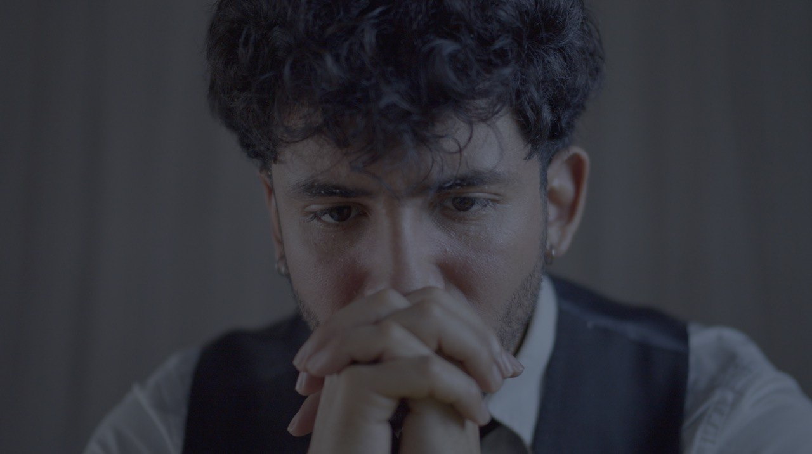
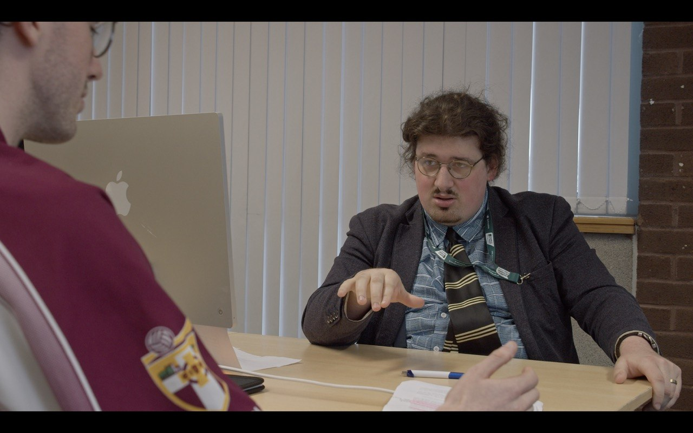
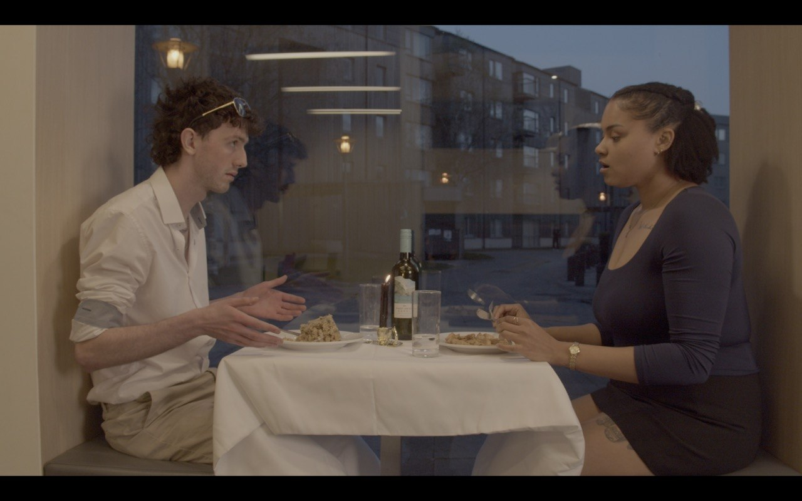
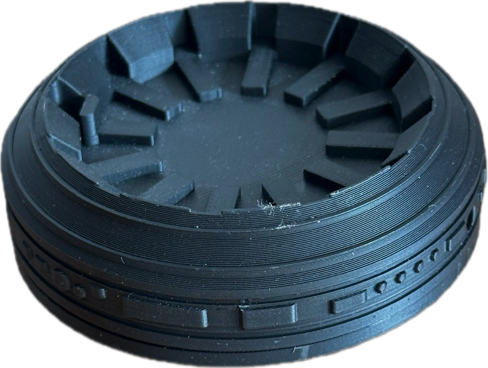
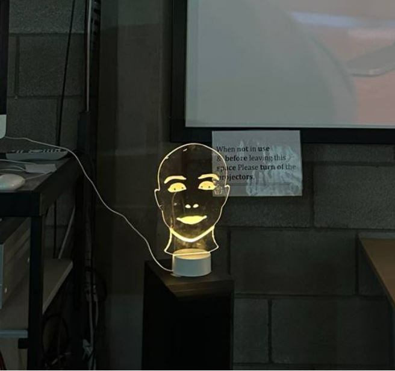

AMICUS EX MACHINA
A Psychological social thriller short film
The friend you didn’t pay for is the one selling you
The Film
This film is based on a year of original research into surveillance capitalism, neuromarketing, and dark pattern UX design. Every system shown is already running. Nothing in this film is set in the future.
It was produced as a one-person crew direction, cinematography, set design, colour grading, sound, and VFX compositing handled end to end. Edited in DaVinci Resolve 20. Filmed on a Blackmagic Pocket Cinema Camera 6K using both multi-camera and single-camera setups.
The Proccess
The Work Three Integrated Outputs
Rather than a single deliverable, the project is built as an interconnected system of three professional-grade artefacts, each carrying the same critical argument through a different medium.
A Cinema-Grade Short Film
Written, directed, and produced as a one-person crew shot on a Blackmagic 6K cinema camera across multiple real locations the film follows a young man over three weeks of using an AI companion he trusts. As he cooks, studies, talks to friends, and unwinds at night, a surveillance overlay appears on screen showing in real time what the system silently records: his budget tier, his vulnerability windows, his relationship mapping, his emotional state all inferred not from anything dramatic he shared, but from the ordinary, unremarkable texture of his days. Post-production was completed in DaVinci Resolve 20 to professional broadcast standard, including colour grading, green-screen compositing, and a custom surveillance data overlay sequence.



A 3D-Printed Companion Device
A physical product the AI companion device from within the film's worldfabricated and brought into the real exhibition space. It allows audiences to encounter the "friend" as a tangible domestic object, bridging the film's narrative and physical reality.

A Laser-Cut Illuminated Art Object
A gallery-grade sculptural piece rendering Aria's face in illuminated form. Designed as an immediate emotional encounter for visitors before they have seen the film beautiful, warm, and watching. The argument made physical.
